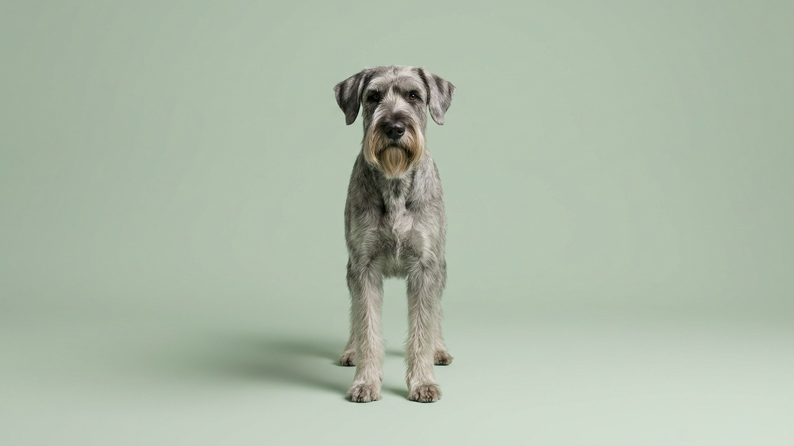

Хозяева ризеншнауцера часто удивляются: собаку выгуляли час, а дома она снова заводит квартиру. Дело в том, что это не «большой цвергшнауцер», а служебная порода, выведенная гонять скот и охранять. Ей нужен не только выгул, а задача для головы — иначе энергия уходит в лай, погрызенную мебель и упрямство. Разберём, что даёт этой собаке спокойствие и как за ней ухаживать.
🐾 Первая помощь — всегда под рукой
AnimaLife подскажет, что делать в тревожной ситуации с питомцем ещё до визита к врачу. Откройте в один тап.
Ризеншнауцер — самый крупный из трёх шнауцеров: рост в холке до 70 см, вес 35–47 кг. За внушительной бородой и бровями скрывается умная, наблюдательная и очень привязанная к семье собака. Исторически он перегонял скот, охранял и работал в полиции — отсюда высокий интеллект и потребность быть при деле.
С близкими ризен ласков и предан, с чужими сдержан и насторожен. Это прирождённый охранник, и эту черту важно не разжигать, а направлять грамотным воспитанием.
Ключ к спокойному ризеншнауцеру — не столько километры, сколько нагрузка на голову. Умная собака без задач начинает изобретать себе занятия сама, и вам они не понравятся.
Жёсткая шерсть ризена почти не линяет, но требует ухода. Классический вариант — тримминг (выщипывание отмершего волоса) несколько раз в год; многие владельцы стригут машинкой, но тогда шерсть мягчает и теряет плотность.
Отдельная история — борода: она пачкается в еде и воде, поэтому её протирают и подсушивают после каждого приёма пищи. Плюс базовое: расчёсывание бороды и «штанов» пару раз в неделю, чистка ушей, контроль когтей и зубов.
🐾 Экономьте на лишних визитах к врачу
Сначала спросите AI-ветеринара в AnimaLife — часто этого достаточно, чтобы понять, нужен ли визит к врачу.
🐾 Понравился разбор?
Подпишитесь на канал — каждый день разбираем по одному тревожному симптому у кошек и собак: что в пределах нормы, а когда пора к врачу. Подпишитесь, чтобы не пропустить разбор, который может спасти здоровье вашего питомца.
Ризеншнауцер — собака для активного человека с опытом, готового вкладываться в дрессировку и движение. Ему тесно у дивана и у человека, который не любит заниматься собакой. Ранняя социализация — знакомство со звуками, людьми, животными в первые месяцы — задаёт, вырастет ли уверенный компаньон или тревожный охранник.
Порода крепкая, но крупным собакам важны здоровые суставы и разумная нагрузка на растущий костяк. Как правильно распределять нагрузку у растущего щенка и на что смотреть в профилактике — обсудите со своим ветеринаром на плановом осмотре.
Материал носит информационный характер и не заменяет очную консультацию ветеринара.